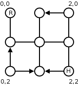

Selma and Louis are two of the most dangerous bank robbers in Man-hat'em City. The main reason they are so good, and never got caught, is their ability to create perfect escape plans. The problem is they are getting old and their mind isn't what it used to be, so they are looking for someone to create a program that automatically creates these escape routes for them.
A well known figure in the crime scene of Man-hat'em told them you were the best guy for the job.
Man-hat'em is a very well organized city. Its streets are layed out in a grid and the distance between each crossroad is always the same. However some streets are one way only and some don't even allow cars.

Besides having to make a quick getaway Selma and Louis have one other problem. The city has recently installed a surveillance system. Cameras have been installed in some crossroads but only one camera is monitored at each given time. The success of their getaway is drastically reduced if they are spotted during their escape so their escape route must avoid any crossing that is being monitored. Luckily, their friend Tony managed to get the surveillance system scheduling plans.
Your job will be to create a program that, given a certain partial map of the city and the surveillance system scheduling, will compute the optimum escape route. The following can be assumed to be always true:
3 3 6 0 0 1 0 1 0 0 0 1 0 2 0 0 1 0 2 1 2 0 2 1 2 2 2 2 2 1 1 4 2 1
6
The plan starts at (0,0) at time 0. They then proceed to (0,1) where they intended to turn left heading to (1,1). Thanks to Tony, they know someone will be monitoring them at (1,1) by the time they get there, so they wait for one time unit. They arrive at (1,1) at time 3, where they wait another time unit as they know they will be monitored at (2,1) at time 4. After this second wait, they proceed to (2,1) and then to (2,2) where they arrive at time 6.
2005 Programming Contest of Porto University
Round 2, 28 of September of 2005
(Author: André Restivo - FEUP)